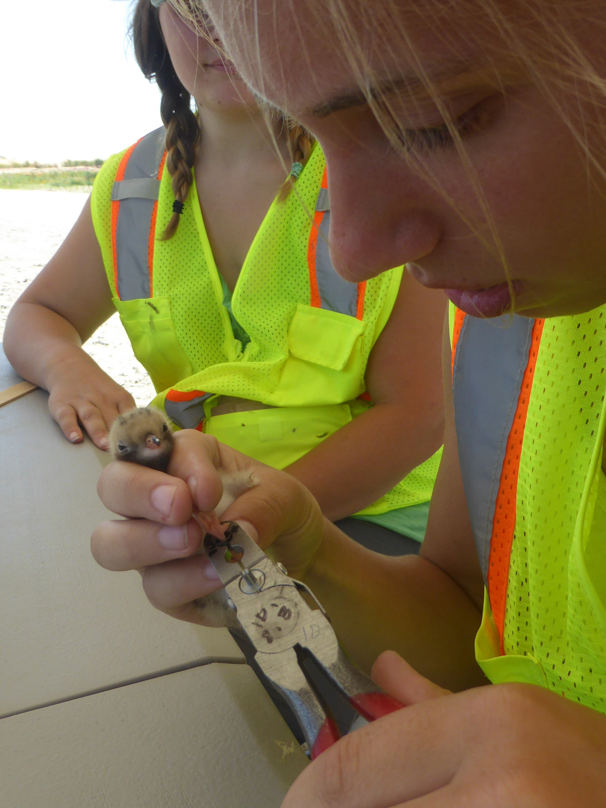

Research
Click on a photo to learn more about each project!
Ongoing research projects
Mammal connectivity in the Hudson Highlands
This research is part of the Hudson Highlands Wildlife Connectivity Project out of Black Rock Forest, which aims to quantitatively assess barriers to the free movements of native carnivores and to identify mitigation strategies to reduce these barriers or facilitate the continued movements necessary to sustain landscape resiliency. As part of this work, I am assessing wildlife space use and functional landscape connectivity.
Modeling deer abundance
Accurately modeling wildlife populations is crucial for effective management. This is particularly true for white-tailed deer (Odocoileus virginianus) populations in the Northeastern United States, where deer are both culturally and historically significant, but often overabundant and damaging to forest health. As climate changes make traditional surveys increasingly challenging and less reliable, we will need to find alternative approaches for monitoring populations. Together with Dr. Scott LaPoint and John Brady, I am working to compare various techniques for measuring deer populations (winter snow tracking, spring pellet counts, and baited and unbaited camera trap surveys) within Black Rock Forest.
We presented this work at Black Rock Forest’s biennial Hudson Highlands Symposium. See a copy of the 2025 abstracts presented here.

Climate change threats to alpine wildlife
Climate change is amplified is polar regions and could have considerable consequences for biodiversity. Boreal regions have warmed more than double the global average and are experiencing increasing precipitation, thawing permafrost, shrinking snow seasons, and increasing shrub and tree encroachment. By quantifying the spatiotemporal factors influencing the abundance, distribution, and behavior of key species (namely, Arctic ground squirrels, collared pika, and hoary marmots), we can continue to tease apart complex species-climate relationships to assess species vulnerability.
See a copy of my dissertation research.
Past Research Projects

Waterbird Population monitoring
As a research technician within the Prosser Lab at the USGS Eastern Ecological Science Center and through the Chesapeake Conservation Corps, I was involved in a number of projects monitoring waterbird nesting success on Poplar island, a large restoration project focused on using dredge material from Baltimore’s shipping channels to restore remote island habitat in the bay. This included banding and monitoring common and least tern populations, assisting the US Fish and Wildlife Service with surveys monitoring gulls, egrets, osprey, and cormorants, and helping to sample and process lesser scaup for avian influenza research.
During my time as a research technician, I helped to build a solar-powered video surveillance system to monitor colonially nesting waterbirds. This included cutting and soldering wires, wiring car batteries to a solar powered array, and coordinating a film production walking through the methodology.
In addition, I helped co-author a field note on the use of bank swallow burrows as microclimates by terns and a paper on evaluating the use of a paired attractant and deterrent to facilitate the relocation of a common tern breeding colony. I also digitized long-term aerial imagery of wetland habitats on Poplar Island to examine climate trends and land-use change.
Northern Saw-whet owl migrations
In 2017, I managed a banding station at Petít Manan Point in Steuben, Maine as part of Project OwlNet, a continent-wide survey effort to track Northern saw-whet owl migration patterns over time.
In partnership with the project’s founder, Dave Brinker, Hawk Mountain Sanctuary, and collaborators throughout the Northeast (ranging from Québec, Canada to Assateague, MD), I assessed Northern saw-whet owl population trends from 7 sites over a 25 year period. We were able to identify cyclic juvenile owl irruptions, and found that populations appeared relatively stable throughout their migration and winter ranges.
See here for a webinar on the project, “Becoming nocturnal: A glimpse into monitoring Northern saw-whet owls” and here for a copy of our published research.